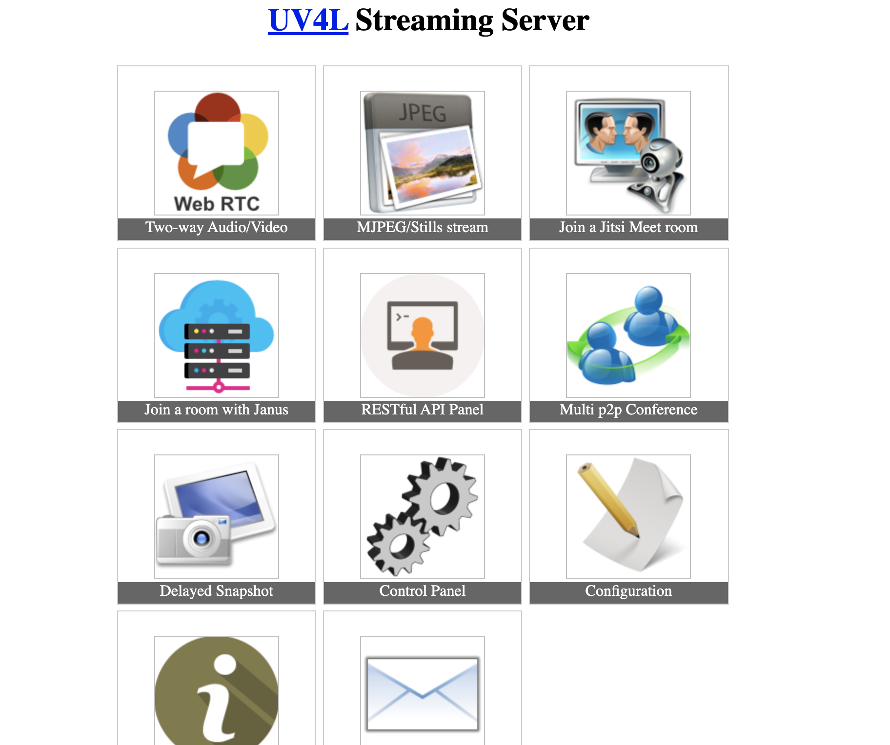
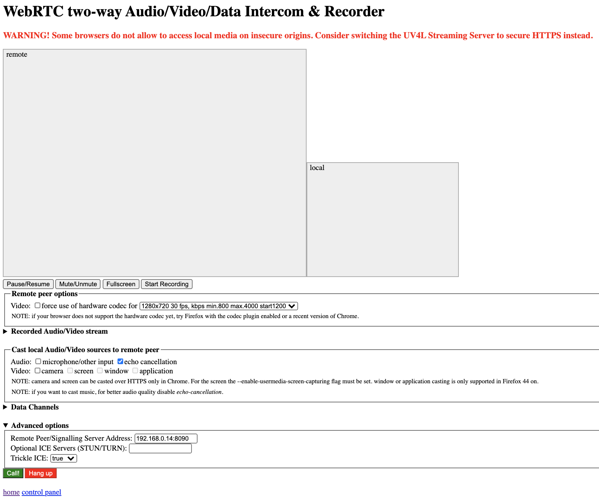
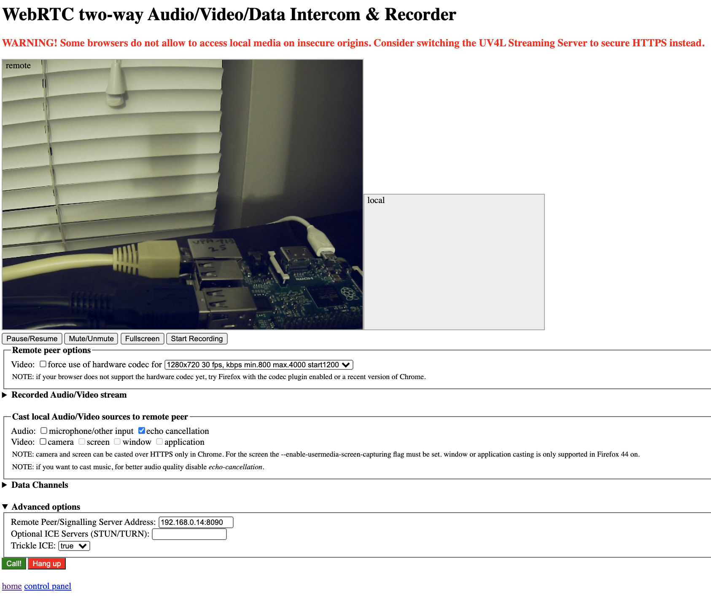

There may be many applications such as wildlife monitoring, baby monitoring, or in general security system applications where you may need to monitor both video and audio stream. One such example of using audio is the Rainforest Connection Species Audio Detection challenge on Kaggle. I wanted to use Raspberry Pi to accomplish video + audio streaming using USB camera and a USB microphone. I have this special requirement since I did not want to buy a Pi Camera as I already have a good quality USB camera and just wanted to use this. Most of the references I was able to find used Raspberry Pi Camera and it was quite confusing for me to navigate this space.
After a bit of struggle to find the relevant information I needed, I got both audio and video streaming working with Raspberry Pi + USB camera + USB microphone. This post is to summarize my findings so that it may be helpful for someone with similar requirements.
There may be many approaches but the most straightforward one for me was to use UV4L streaming server, specifically, the two-way audio/video intercom recorder, WebRTC. However, for my purpose, I only need one way stream from USB camera and microphone connected to the Raspberry Pi. WebRTC provides a web UI you can use to start or end the stream from the server.
Step 1: Install UV4L
- Follow the instructions here. For completeness, I will outline the steps I followed here.
- Since I have
Raspbian Busteron my Pi, I used the following command
curl https://www.linux-projects.org/listing/uv4l_repo/lpkey.asc | sudo apt-key add -- I add this line to the file
/etc/apt/sources.list
deb https://www.linux-projects.org/listing/uv4l_repo/raspbian/stretch stretch main- Next run the install commands
$ sudo apt-get update
$ sudo apt-get install uv4l uv4l-raspicamI stopped here as I just wanted to setup a video + audio stream for a monitoring application and did not really need the uv4l-raspicam-ai modules.
Step 2: Configure USB camera
- Follow the instructions on configuring UV4L or WebRTC using a USB camera here. Here are the steps I followed.
- Installed the following packages
sudo apt-get install uv4l uv4l-server uv4l-uvc uv4l-server uv4l-webrtc uv4l-xmpp-bridge- Used the dmesg command to find the USB camera device id
$ dmesgAn excerpt from the output here:
[ 7.824796] mc: Linux media interface: v0.10
[ 7.889277] videodev: Linux video capture interface: v2.00
[ 8.072950] uvcvideo: Found UVC 1.00 device H264 USB Camera (05a3:9422)
[ 8.168458] input: H264 USB Camera: USB Camera as /devices/platform/soc/3f980000.usb/usb1/1-1/1-1.5/1-1.5:1.0/input/input8
[ 8.169582] usbcore: registered new interface driver uvcvideo
[ 8.169736] USB Video Class driver (1.1.1)- Ran this command to add the hex device ID on line three in the above output.
$ uv4l --syslog-host localhost --driver uvc --device-id 05a3:9422- I got this output indicating that the camera was indeed detected successfully.
<notice> [core] Trying to loading driver 'uvc' from built-in drivers...
<notice> [core] Loading driver 'uvc' from external plug-in's...
<notice> [driver] Video functionality 'USB Camera' recognized at 05a3:9422
<notice> [core] Device detected!
<notice> [core] Registering device node /dev/uv4l- Changed driver to
uvcin/etc/uv4l/uv4l-raspicam.conf
driver = uvc- Reboot the Raspberry Pi using
$ sudo rebootOnce the Pi is up, check the following url (note the port is not 8080! It’s http://pi_ip_address:8090/) on the client where you want to receive the stream – in my case, this is my laptop. I used chrome as my browser. You should see a page like this.

Click on the WebRTC (first icon) on the page and you end up with a page where you can connect to the stream on the client.

You will see a button called Call (in green) in the bottom left part of the page. Just click it and you should start receiving the video stream like this. 
I have pointed the camera to the Pi since I wanted to check the delay in frames over my WiFi using the periodic blinking light on the LAN cable. The delay I noticed in video is acceptable for my purpose. As of now, you would notice that the audio is still not streaming.
Step 3: Configure USB microphone
- Follow these instructions partially to find your USB microphone and include it in the WebRTC server configuration. Here are steps I followed.
- I executed the following command
$ arecord -L | grep CARDdefault:CARD=Camera
sysdefault:CARD=Camera
front:CARD=Camera,DEV=0
surround21:CARD=Camera,DEV=0
surround40:CARD=Camera,DEV=0
surround41:CARD=Camera,DEV=0
surround50:CARD=Camera,DEV=0
surround51:CARD=Camera,DEV=0
surround71:CARD=Camera,DEV=0
iec958:CARD=Camera,DEV=0
dmix:CARD=Camera,DEV=0
dsnoop:CARD=Camera,DEV=0
hw:CARD=Camera,DEV=0
plughw:CARD=Camera,DEV=0
default:CARD=Microphones
sysdefault:CARD=Microphones
front:CARD=Microphones,DEV=0
surround21:CARD=Microphones,DEV=0
surround40:CARD=Microphones,DEV=0
surround41:CARD=Microphones,DEV=0
surround50:CARD=Microphones,DEV=0
surround51:CARD=Microphones,DEV=0
surround71:CARD=Microphones,DEV=0
iec958:CARD=Microphones,DEV=0
dmix:CARD=Microphones,DEV=0
dsnoop:CARD=Microphones,DEV=0
hw:CARD=Microphones,DEV=0
plughw:CARD=Microphones,DEV=0- A bit tricky, you have to literally count the lines starting from zero to your microphone device in the last line
plughw:CARD=Microphones,DEV=0. plughw:CARD=Microphones,DEV=0is line 27 starting from zero for the first line.- In the file
/etc/uv4l/uv4l-raspicam.conf, find the line that has the audio device index and set the index to the line number of you microphone. In my case, it’s 27.
server-option = --webrtc-recdevice-index=27Reboot the Raspberry Pi and you should be able to access the Video + Audio stream from Raspberry Pi on your WiFi at http:pi_ip_address:8090/stream/webrtc
Conclusion
The setup of USB camera + USB microphone is something I had and wanted to utilize it without making additional purchases such as Pi Camera. This was a special requirement for me – there may be much simpler tools if you have a Pi Camera with you. This setup looks very reliable with millisecond level latency. Also, the service has been running for over a day as of my writing of this article.